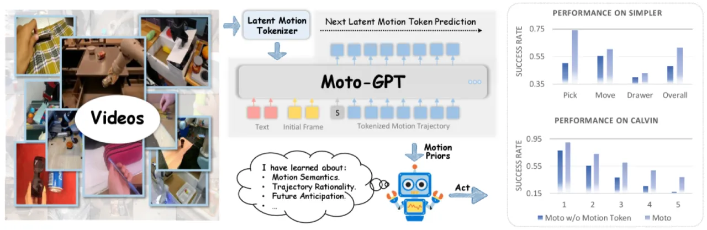
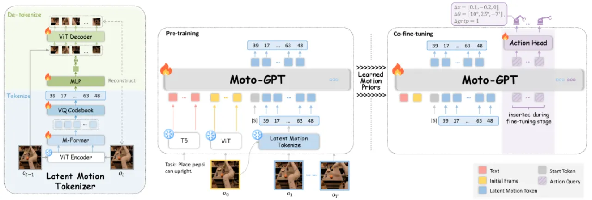
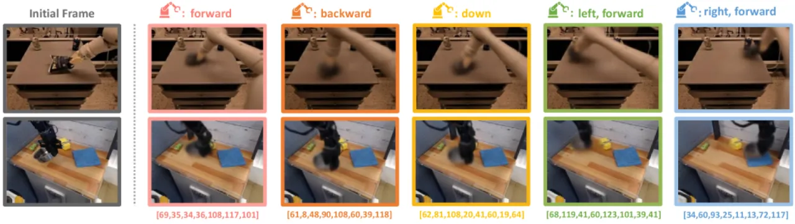
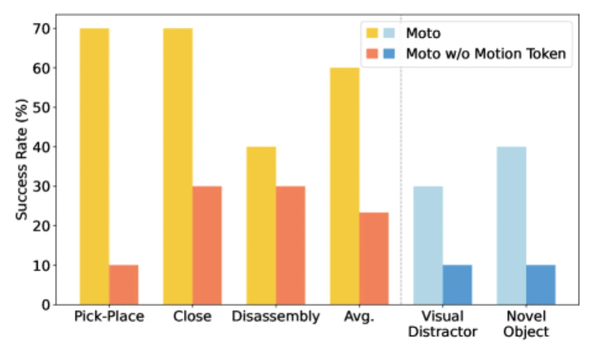

Moto 提出将视频帧对压缩为离散的"隐运动 token"，在大规模无标注视频上以自回归方式预训练 Moto-GPT，再通过 co-fine-tuning 迁移到机器人动作预测。仅 98M 参数，在 SIMPLER 基准上达到 61.4% 成功率，媲美参数量达 55B 的 RT-2-X（60.7%）。
机器人操控学习面临两大核心挑战：其一，带动作标注的机器人演示数据稀缺且采集昂贵；其二，现有视觉-语言-动作（VLA）模型在视频预训练阶段与低层动作之间缺乏有效桥梁，预训练收益难以充分转化为操控能力。视频中蕴含丰富的运动语义，却因动作标签的硬件依赖性而被大量浪费。
"effective robotic learning should emphasize motion-related knowledge, which is closely tied to low-level actions and is hardware-agnostic."

Moto 的核心思想是将"运动"从视频中抽象为一种与硬件无关的离散语言——隐运动 token——使 GPT 式的自回归预训练能够直接在该语言空间中学习运动先验，再以统一 token 序列驱动机器人动作预测。

给定时间步 t 的观测帧 ot 与后续帧 ot+k，M-Former 编码器将二者拼接后提取运动嵌入，经 VQ 量化得到离散隐运动 token（词表大小 128）。ViT 解码器以初始帧和运动 token 为输入重建目标帧，重建误差提供像素级监督，确保 token 携带真实运动语义而非静态外观信息。
将一段机器人（或人类）视频逐帧对量化为隐运动 token 序列后，Moto-GPT 以 GPT 架构自回归建模该序列的条件分布。预训练数据无需动作标签，只需原始视频，从而可规模化利用互联网视频或人类操作视频（实验中使用了 SSV2 数据集），学习与硬件无关的运动先验。
在带动作标注的机器人演示数据上，将 action query token 插入 Moto-GPT 的输入序列，与运动 token 共同预测。轻量 action head 将 action query token 的隐状态映射为连续关节动作。损失函数同时包含运动 token 预测的交叉熵损失与动作预测的回归损失，运动预测起辅助正则化作用，防止预训练知识在微调中被遗忘。

实验在三个评测场景展开：SIMPLER（模拟器中的多任务操控基准）、CALVIN（长序列多步骤操控基准）、以及配备 FANUC 机械臂的真实机器人任务（抓取香蕉、合上笔记本、分解装置）。基线包括 RT-1-X、RT-2-X、Octo-Base、OpenVLA 和 GR-1 等主流方法。
| 方法 | Pick Coke Can | Move Near | Open/Close Drawer | Overall |
|---|---|---|---|---|
| RT-1-X | 0.567 | 0.317 | 0.597 | 0.534 |
| RT-2-X（55B 参数） | 0.787 | 0.779 | 0.250 | 0.607 |
| Octo-Base | 0.170 | 0.042 | 0.227 | 0.169 |
| OpenVLA | 0.163 | 0.462 | 0.356 | 0.248 |
| OpenVLA (fine-tuned) | 0.363 | 0.542 | 0.231 | 0.349 |
| Moto w/o Motion Token | 0.503 | 0.554 | 0.398 | 0.480 |
| Moto（98M 参数） | 0.740 | 0.604 | 0.431 | 0.614 |
| 方法 | T=1 | T=2 | T=3 | T=4 | T=5 | Avg. Length |
|---|---|---|---|---|---|---|
| SuSIE | 0.870 | 0.690 | 0.490 | 0.380 | 0.260 | 2.69 |
| RoboFlamingo | 0.824 | 0.619 | 0.466 | 0.331 | 0.235 | 2.47 |
| MT-R3M | 0.529 | 0.234 | 0.105 | 0.043 | 0.018 | 0.93 |
| GR-1 | 0.854 | 0.712 | 0.596 | 0.497 | 0.401 | 3.06 |
| Moto w/o Motion Token | 0.779 | 0.555 | 0.380 | 0.256 | 0.167 | 2.14 |
| Moto | 0.897 | 0.729 | 0.601 | 0.484 | 0.386 | 3.10 |

核心消融在于对比"有无 motion token 预训练"：在 SIMPLER 上，去除 motion token 后整体成功率从 61.4% 降至 48.0%（降幅 13.4 个百分点）；在 CALVIN 上，平均链长从 3.10 降至 2.14（降幅约 45%）。此外，用 SSV2 人类视频辅助预训练（Move Near 子任务）进一步提升成功率，说明跨身形迁移的可行性。视频分类准确率消融（表 1）验证了隐运动 token 在语义层面的有效性：7 个 token 块达 79.7%，而仅使用初始帧仅有 29.2%。
论文指出："While we currently mainly use robot videos to train the Latent Motion Tokenizer, the learned latent motion tokens demonstrate the potential to produce consistent visual motions across varied contexts and embodiments." 将 Tokenizer 扩展到更大规模、更多样的人类操作视频是关键的未来方向，有望显著扩大可用预训练数据量。
"Future work could scale up pre-training video data and optimize fine-tuning to improve model performance on downstream robot tasks further." 当前实验受限于数据量和计算资源，预训练与微调的协同优化策略尚未充分探索。
"Future research could explore Moto's use in improving the robustness of reinforcement learning agents and extending its application to a wider range of robotic tasks, such as navigation and locomotion, to develop a more versatile robot action policy." Moto 作为奖励模型和环境模拟器的潜力也尚待验证。
SSV2 实验初步展示了人到机器人的运动迁移潜力，但论文承认对于更复杂的人体动作（fine-grained dexterous manipulation），当前架构需要进一步改进方能实现可靠的跨身形迁移。